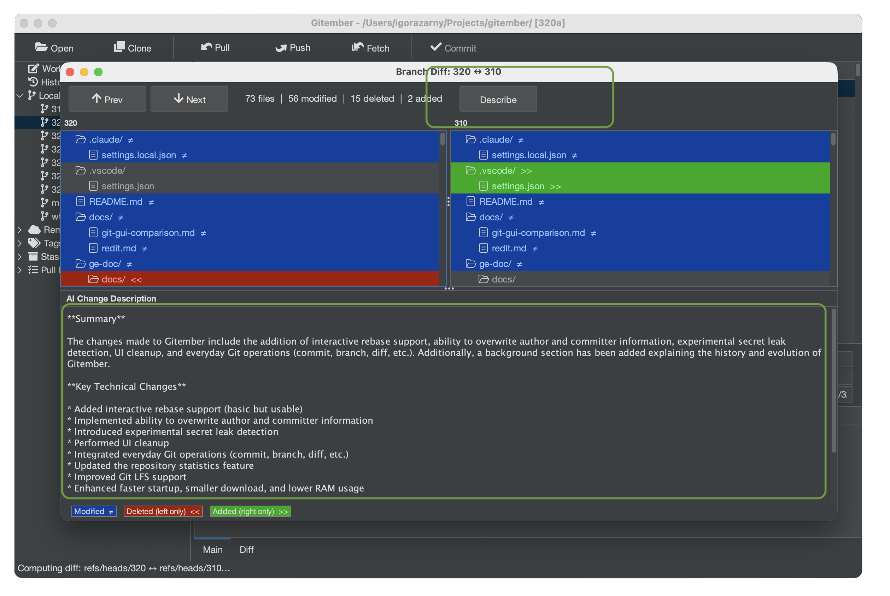
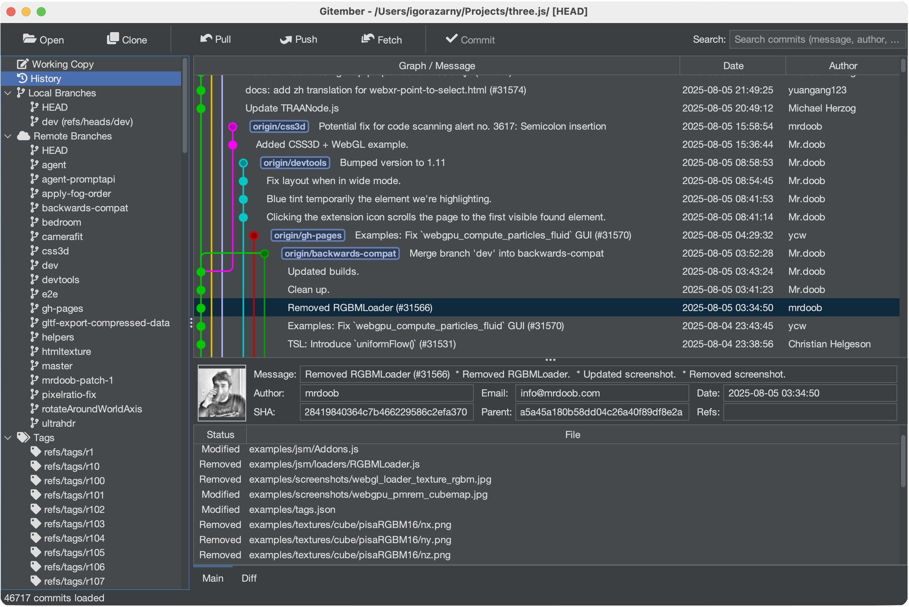
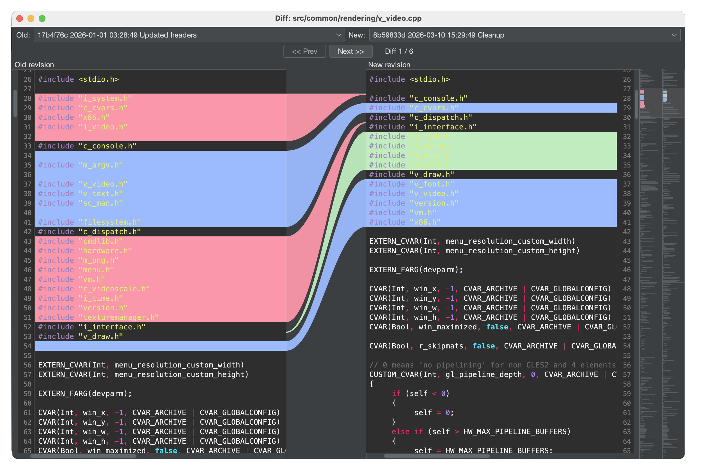
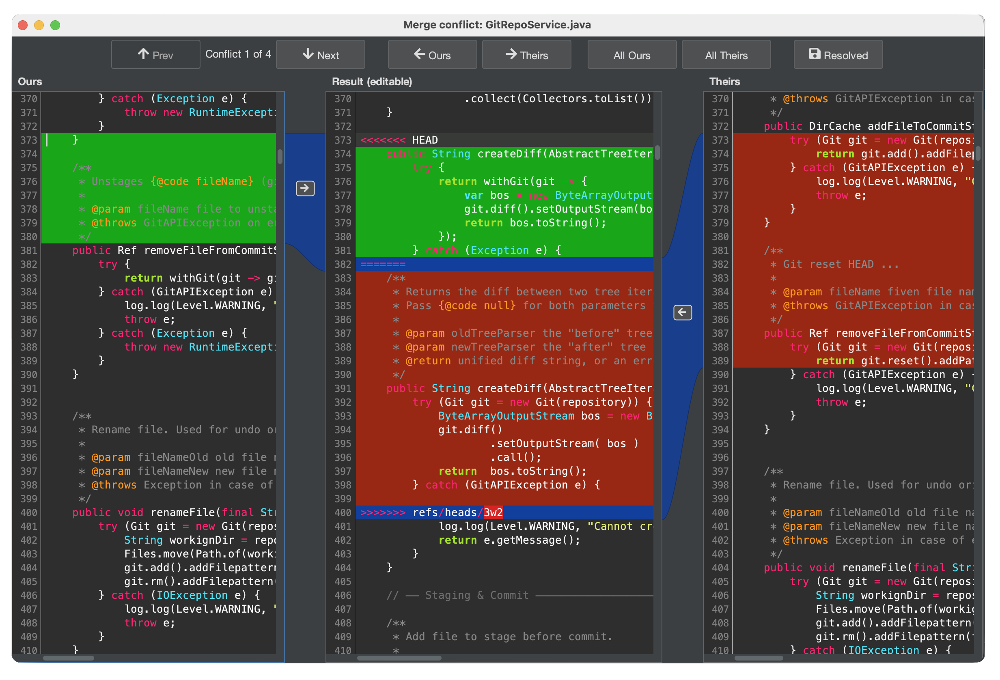
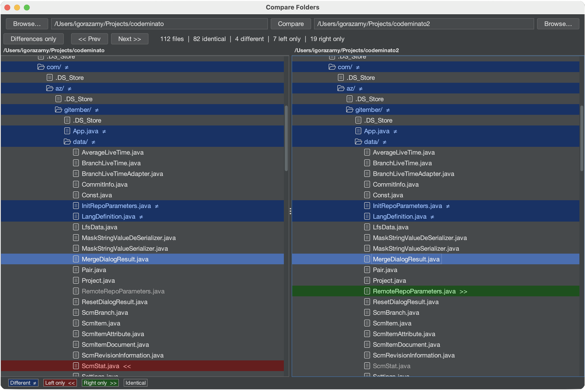
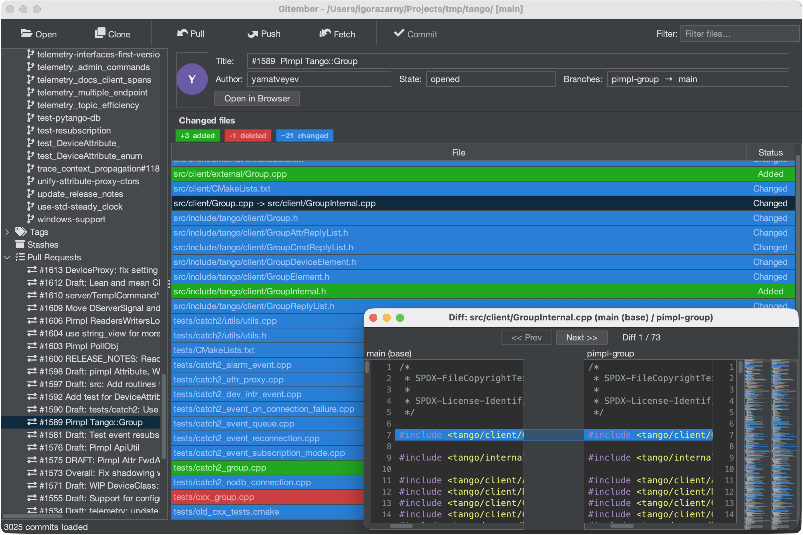
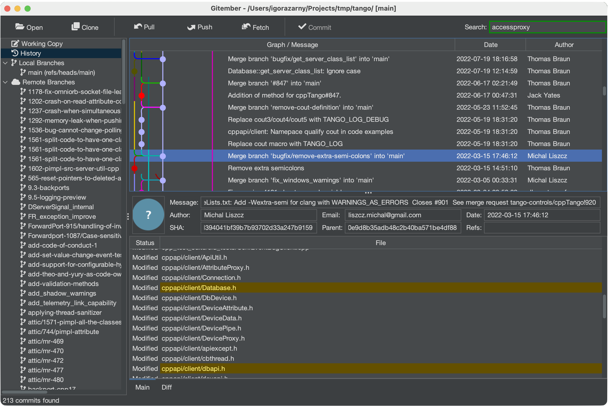
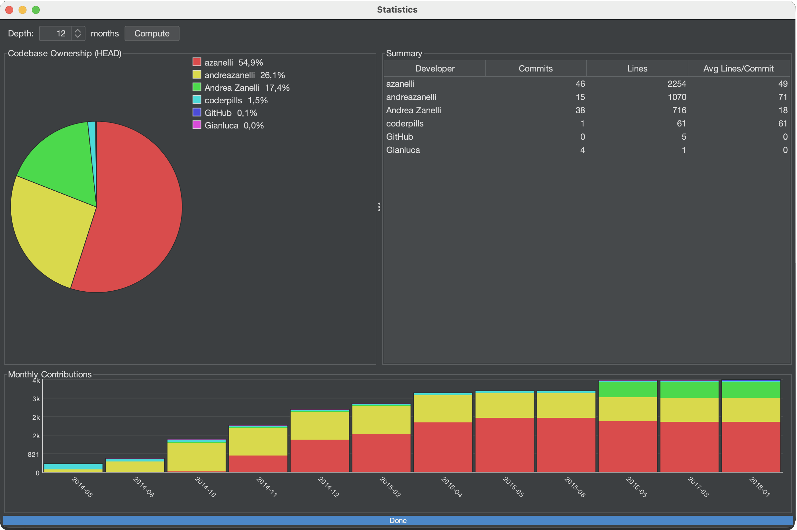

Built for Everyone Who Uses Git
Whether you just installed Git for the first time or you're managing a large multi-team repository, Gitember gives you exactly what you need.
Beginners
No more memorizing cryptic command-line flags. Gitember turns complex Git operations into simple point-and-click actions - commit, push, pull, branch - all in one window.
Developers
Visualize your repository history, review Pull Requests, navigate diffs with syntax highlighting, and run advanced full-text searches across the entire commit history.
Teams & Professionals
Track project velocity with statistics reports, manage Git LFS assets, compare entire directory trees, and review PRs from GitHub, GitLab, Bitbucket, Azure DevOps or Gitea - all in one tool.
Key features
Cover daily needs and much more
Many Repos, One Working Set
A Workspace groups several independent repositories:
- a backend and a frontend
- a set of microservices
- an SPI and its implementations
so you can pull, push, commit, branch and merge across all of them in one action, instead of opening each repository in turn. This is not submodules and not a monorepo: every repository keeps its own history, remote and branches.
- Workspace Dashboard - the whole set in front of you: a summary table, a combined working copy, and a cross-repository search
- Combined working copy - one tree with every repository's changed files, with the same staging checkboxes and context menu as a single repo
- Cross-repository search - search the contents of every working copy at once, with results grouped by repository
- One commit, one message - stage files from any subset of repositories and commit them together, with the repository shown next to each file
AI features
Gitember’s experimental AI features use a locally running AI model to enhance security and code review without sending your source code or data to the cloud. AI can detect potential secrets before commits and generate plain-English summaries of differences between branches.
- Local AI - All inference runs on your machine through Ollama
- Secret Leak Detection - Scans staged files for passwords, API keys, tokens, credentials, private keys, and other sensitive data before committing
- AI Branch Descriptions - Summarizes branch differences, key technical changes, and potential impact for easier code reviews and release notes.
- AI Commit Message - Commit message generation based on changes.


Full Repository & File History
Navigate your entire commit history in a structured timeline. Click any commit to see its full diff, affected files, author details, and metadata. Filter by branch, author, date range, or keyword to find exactly what you need.
- Visual commit graph with branch and merge lines
- File-level history - trace every change to a specific file across the project lifetime
- One-click diff between any two commits
- Restore any file to any historical version in two clicks
The File Diff Viewer Developers Love
Gitember's built-in diff engine goes far beyond basic line highlighting. Whether you're reviewing a colleague's pull request or tracking down a regression, you'll see exactly what changed and why.
- Unified diff - inline view with colour-coded additions and deletions
- Context diff - surrounding lines give you the full picture without scrolling
- Side-by-side diff - dual-pane view for effortless line-by-line comparison
- Syntax highlighting for Java, Python, JavaScript, TypeScript, Kotlin, Go, Rust, C/C++, SQL, YAML, Markdown, and 30+ more
- Light and dark themes that adapt to your system preference


Conflict resolving. 3 Way merge
With our intuitive 3-way merge interface, you don’t just see “what changed” - you understand why it changed.
- Resolve conflicts with confidence. Instantly pick, combine, or edit changes with precision - without digging through cryptic markers.
- Whether you’re rebasing, merging branches, or reviewing changes, Gitember keeps you focused and fast.
- Visual clarity over chaos. Clean, distraction-free UI highlights differences in a way that actually makes sense (finally).
Folder Comparison Tool - See the Whole Picture
Need to compare a backup copy, a build output, or a feature branch's file structure against your working directory? Gitember's folder comparison tool scans both directories and presents them as synchronized, colour-coded tree views.
- Green - files unique to the right folder (added)
- Red - files unique to the left folder (removed)
- Blue - files present in both but with different content
- Configurable ignore list - skip compiled artifacts (.class, .jar, .dll, .pyc…) automatically
- Double-click any changed file to open the full side-by-side diff viewer
- Navigate between differences with Next / Previous buttons


Pull Request Review - No Browser Required
Connect Gitember to your GitHub, GitLab, Bitbucket, or self-hosted Gitea instance and review open Pull Requests without leaving the app. See the PR title, author, state, and the full list of changed files - colour-coded and ready to diff.
- Supports GitHub, GitLab, Bitbucket Cloud, and Gitea
- Works with both HTTPS and SSH remote URLs
- Changed files listed as Added / Modified / Deleted with colour coding
- Double-click any file for a full side-by-side diff between base and head branches
- One-click "Open in Browser" to jump to the PR page
Search Everything, Find Anything
Gitember's indexing engine goes far beyond grepping text files. It extracts and indexes content from a wide variety of file formats, so you can search across your entire repository history with a single query.
- Search commit messages, tags, branch names, and file paths.
- Full-text search inside source code, Markdown, and config files
- Indexed content from graphics (PNG, JPEG, SVG), PDFs, Office documents (Word, Excel, PowerPoint), OpenDocument files, and CAD formats (DXF, STL)
- Filter results by branch, author, or date range


Repository Statistics at a Glance
Gitember provides clear insights into how your repository evolves over time. Built-in analytics transform commit history into meaningful statistics, helping you understand development activity, contributor dynamics, and project growth without exporting data or running external tools.
- Commit activity charts showing repository growth over time
- Contributor statistics highlighting commits per author
- Branch activity overview to identify active and inactive branches
- Daily, weekly, and monthly commit distribution
- Quick overview of repository size, commits, branches, and tags
Everything You Need in One Git Client
Full Git Support
Clone, init, commit, push, pull, fetch, branch, merge, rebase, stash, tag - every essential Git command available through a clean visual interface. Supports SSH and HTTPS remotes.
Powerful File Diff Viewer
Unified, context, and side-by-side diff modes with full syntax highlighting for 40+ languages. Instantly see what changed, line by line, in any commit or working-copy file.
Folder Comparison Tool
Compare two entire directory trees side-by-side in a synchronized tree view. Immediately spot files that were added, removed, or modified - even across large project structures.
Advanced Search
Search through commit messages, tags, branch names, and file contents - including text files, graphics, Office documents, PDFs, and CAD drawings - all indexed and instantly searchable.
Statistics & Insights
Understand project health at a glance with visual statistics: commit frequency, lines changed per author, branch activity, and more. Perfect for sprint reviews and code audits.
Git LFS Ready
Manage large binary assets - images, videos, 3D models, datasets - with built-in Git Large File Storage support. Track patterns, fetch objects, and see LFS file status directly in the UI.
Why Choose Gitember?
Gitember is a free and open-source Git GUI client designed for developers who want a visual Git workflow without the complexity of a large IDE. It combines repository history, Git operations, diff and merge tools, folder comparison, statistics, full-text search and Pull Request review in one cross-platform desktop application.
What's Coming Next
Here's what we're working on for future releases of Gitember.
CLI Alternatives
One-click copy of the equivalent Git command for every operation - learn Git faster or integrate actions into your scripts.
Java 27 Migration
Upgrade the runtime to Java 26, adopting modern language features, improved GC, and Virtual Threads for snappier background operations.
Frequently Asked Questions
A free Git GUI for Windows, macOS and Linux - including GitHub Desktop, Sourcetree and GitKraken alternatives, Git LFS, diffs and three-way merge.
-
Is Gitember free?
Yes. Gitember is free and open source (GNU GPL 3.0). There is no subscription, no paid “Pro” tier and no account. Download the Windows, macOS or Linux build and use every feature - history, diffs, merge, LFS, search and pull requests - without registration.
-
Does Gitember work on Windows?
Yes. Gitember provides Windows MSI and ZIP distributions, plus a Microsoft Store package. It runs on Windows 8 and later. The MSI is the usual installer; the ZIP is a portable copy. Java is bundled in the native packages, so you do not need to install a JDK first.
-
Does Gitember work on macOS?
Yes. Gitember provides a signed and notarized Apple Silicon DMG. Install it like any other Mac app: open the DMG and drag Gitember to Applications. Because the build is signed and notarized, Gatekeeper accepts it without extra steps.
-
Does Gitember work on Linux?
Yes. Gitember ships a Linux DEB package and a runnable fat JAR. The DEB is the straightforward path on Debian and Ubuntu; the JAR runs anywhere a current JRE is available.
-
Does Gitember support GitHub?
Yes. Gitember supports GitHub, GitLab, Bitbucket and Gitea. Clone over HTTPS or SSH, then browse and review pull or merge requests in the app with a personal access token. You are not locked to GitHub - the same client works with GitLab, Bitbucket and self-hosted Gitea.
-
Does Gitember support Git LFS?
Yes. Gitember has built-in Git Large File Storage support. Enable LFS on a repository, track binary patterns, fetch LFS objects and see LFS file status in the working copy - useful for images, video, 3D assets and datasets.
-
Does Gitember have a Git diff viewer?
Yes. Gitember includes a built-in Git diff viewer with unified, context and side-by-side modes and syntax highlighting for 40+ languages. You can diff working-copy changes, commits and branches. A separate folder comparison tool compares two directory trees, including folders that are not Git repositories.
-
Does Gitember support three-way merge?
Yes. Gitember includes a visual three-way merge editor for merge and rebase conflicts. You see ours, theirs and the result in one place, then pick, combine or edit hunks without hunting through conflict markers.
-
Is Gitember an alternative to GitHub Desktop?
Yes. Gitember is a free GitHub Desktop alternative for developers who want a visual Git client that is not tied to GitHub alone. It works with GitHub, GitLab, Bitbucket and Gitea, and adds a commit graph, side-by-side diffs, three-way merge, Git LFS, workspaces for several repositories, Lucene full-text search and in-app pull request review. If you searched for a GitHub Desktop alternative, start with the free download or the Git GUI comparison.
-
Is Gitember a Sourcetree alternative?
Yes. Gitember is a free Sourcetree alternative: clone, commit, branch, merge, rebase, stash and tag in a visual Git GUI. Interactive rebase, stash, a built-in diff viewer and three-way merge are included. Unlike Sourcetree, Gitember does not require an Atlassian account.
-
Is Gitember a GitKraken alternative?
Yes. Gitember is a free, open-source GitKraken alternative. You get a visual commit graph, diffs, merge tools and Git hosting integrations without a Pro subscription. Optional AI features (commit messages, branch summaries, secret leak detection) run locally through Ollama - your source never leaves the machine for those features.
-
What is a good free Git GUI?
Gitember is a free Git GUI for Windows, macOS and Linux. It covers daily Git work and also side-by-side diffs, three-way merge, folder comparison, Git LFS, full-text search and pull request review. There is no account and no paid plan. See how it compares to GitHub Desktop, Sourcetree, GitKraken and others in the Git GUI comparison.
-
Do I need an account to use Gitember?
No. Gitember works offline with local repositories and does not require a Gitember account. A GitHub, GitLab, Bitbucket or Gitea token is optional and only needed when you want pull request review or authenticated remotes.
-
Can Gitember manage multiple Git repositories at once?
Yes. A Workspace groups independent repositories (for example a backend and a frontend, or several microservices) so you can pull, push, commit, branch and merge across all of them in one action. Each repository keeps its own history and remotes - this is not submodules and not a monorepo. Workspace documentation
-
Can I review pull requests in Gitember?
Yes. Gitember can list and open pull or merge requests from GitHub, GitLab, Bitbucket and Gitea. Store an access token in project settings and review request diffs without switching to the browser.
-
Where is the Gitember source code?
Gitember is open source on GitHub. Documentation lives at gitember.org/doc. Questions: Igor Azarny.
Download Gitember
- Windows MSI
- Windows ZIP
- Windows store better
- Apple silicon DMG signed notarized
- Linux DEB
- ♨ Fat jar
- Source code
Free and open source. No account or registration required. Works offline.
Version 3.4.5 · Sep 2026
Questions? Mail Igor Azarny